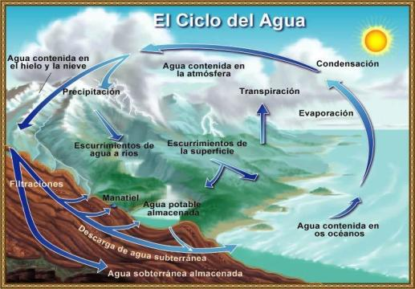

|
|
........Literatura>>>Generalidades sobre el agua, propiedades quimico-fisicas
El aspecto más sorprendente y característico de nuestro planeta, visto desde el espacio, es la gran cantidad de agua que tiene su superficie. Por eso la tierra ha sido llamada El planeta de agua.
El hombre siempre ha estado interesado en la manera en que esta agua se relaciona con la atmósfera y la superficie terrestre, originando nubes, lluvia, nieve, corrientes, evaporación e infiltración, al igual de la relación con el interior de la tierra. El agua es una de las sustancias más importantes en nuestro planeta ya que en ella se formó la vida hace millones de años y sin ella no podríamos sobrevivir, tomando en cuenta que es un elemento fundamental en todos los organismo vivientes y en el funcionamiento de la Tierra.
Para muchos investigadores el agua es un compuesto muy singular y una de las sustancias naturales más notables de la naturaleza, la cual posee una gran variedad de propiedades físicas y químicas, mostrándose en 3 estados fundamentales: Sólido, líquido y gaseoso, y en la enorme escala de temperaturas que se presenta en el mar.
TIPOS DE AGUA
AGUAS OCEÁNICAS
El verdadero origen del agua oceánica aun es un misterio para los científicos, sin embargo existen distintas teorías. La más aceptada de ellas propone que el agua en la superficie terrestre fue obtenida a través de colisiones con asteroides de hielo y cometas, en su mayor parte, liberada en forma de vapor de agua. A medida que la superficie terrestre se enfriaba dicho vapor se concentró, constituyendo así el mayor componente del planeta.
Cuando la superficie de la Tierra se enfrió, el vapor condensado cayó como lluvia y forma de charcos y lagos que, al ir extendiéndose y uniéndose, dieron origen a los primeros océanos.
Por todo lo anterior se puede concluir que el agua que existe en este planeta, en su mayoría se halla concentrada en los océanos, y el menor porcentaje se encuentra en lagos, ríos, casquetes glaciares, en cavidades y en los poros de las rocas.
Al conjunto del agua presente encima, en y dentro de la tierra se le denomina “Hidrosfera”, sin embargo a la que se encuentra mas alejada de la tierra se le denomina “Agua Oceánica”.
PROPIEDADES FÍSICAS Y QUÍMICAS DE LAS AGUAS OCEÁNICAS
El agua del mar tiene una sanidad media de 34.7 gramos por litro. El cloruro sódico es la sal más abundante en el mar, y representa el 77% de las sales marinas; en menor proporción hay cloruro magnésico, sulfato magnésico, sulfato cálcico, sulfato potásico y carbonato de calcio. Se han encontrado unos 49 elementos disueltos en el mar, algunos de ellos en concentraciones muy pequeñas. La masa total de las sales disueltas en los océanos se calcula en los 50 billones de tm.
La salinidad aumenta desde el ecuador hasta los 15-30 grados de latitud, para disminuir de nuevo hacia los polos. Los valores mínimos de salinidad corresponden al golfo de Botnia, con 3 gramos por litro, y al mar Báltico con 8 gramos por litro. En las zonas superficiales la salinidad varía con la temperatura y la evaporación, y es uniforme a profundidad. De esta forma la salinidad del mar depende de la temperatura.
COMPONENTES PRINCIPALES DEL AGUA OCEÁNICA:
COMPONENTE |
% |
Trazas de elementos |
0,01% |
Flúor |
0,003% |
Estroncio |
0,04% |
Acido Bórico |
0,07% |
Bromo |
0,19% |
Bicarbonato |
0,41% |
Potasio |
1,10% |
Calcio |
1,16% |
Magnesio |
3,69% |
Sulfato |
7,69% |
Sodio |
30,61% |
Cloro |
55,04% |
LAS AGUAS CONTINENTALES
Las aguas continentales son aquellas que se localizan en los continentes y que han perdido su salinidad mediante evaporación, pues al pasar al estado gaseoso de ellas se desprende cualquier sustancia sólida, purificándose de manera natural. Por esta cualidad también se les llama aguas dulces, además de ser potables y tener un sabor dulce para el ser humano quien las distingue de las aguas oceánicas a las que denomina por la misma razón, aguas saladas.
TIPOS DE AGUAS CONTINENTALES
RIOS
Son corrientes que fluyen en los continentes, de las partes altas hacia las bajas. Por ello el relieve es el factor que más determina todas las características, desde los pequeños arroyos que carecen de nombre, hasta los ríos más grandes del planeta como el Amazonas o el Congo.
La cuenca del rió es la región, delimitada por montañas o elevaciones, que capta aguas para alimentar las corrientes. La parte mas elevada de la cuenca es el parte aguas o divisoria, donde el agua de las lluvias se bifurca entre una cuenca y otra. El relieve determina también el tamaño y la forma de la cuenca, los cuales fijan la cantidad de agua que recibe un río, es decir, el caudal; obviamente, mientras más grande es la cuenca, mayor es el caudal de un río.
El caudal varía su velocidad y su fuerza a lo largo del centro del cauce o río. Esas variaciones se denominan gasto y se calculan dividiendo el volumen de agua entre la longitud del tramo que recorre el río. Para ello se requiere el cálculo preciso por que el agua de un río escurre con mayor rapidez en su parte central superior, mientras en el fondo y en las orillas lo hace con lentitud.
El caudal de un río varía a lo largo del año. Cuando es mínimo se denomina estiaje, el cual se presenta poco antes del tiempo de lluvias u otra fuente de alimentación. Durante este fenómeno, algunos ríos ubicados en zonas áridas o semiáridas pueden secarse, pues el agua que los alimenta es escasa.
LAGOS
Son parte del drenaje continental. El agua en su camino rumbo al mar, o al fondo interior de una vertiente, puede detenerse ante diversos obstáculos y forman los cuerpos de agua que adquieren características vitales como movimientos y función natural.
En los lagos se desarrolla más vida vegetal y animal que en los ríos. Esto se debe a la tranquilidad de sus aguas.
Los lagos se alimentan del los ríos, por medio de lluvias, deshielos y emanaciones subterráneas. Sin embargo, en los lagos las fluctuaciones se presentan a mediano y a largo plazos, por lo que su nivel aumenta o decrece en años, de acuerdo con la alimentación recibida y el ritmo con que emana el agua. Si pierde agua a mayor velocidad que la ganancia, el lago tiende a salarse y a disminuir su nivel, llegando en ciertos casos a secarse.
AGUAS SUBTERRÁNEAS
Se originan principalmente a partir de la infiltración de agua proveniente de lluvias, ríos, lagos, glaciares y, a niveles profundos, de océanos. Las aguas subterráneas pueden generarse también por actividad volcánica, que despide humedad en el interior de la tierra; o por medio de las aguas fósiles, las aguas quedaron atrapadas en etapas geológicas anteriores entre capas de rocas sedimentarias flexionadas.
El agua subterránea se distribuye por niveles de profundidad y por la función que desempeñan. El agua que queda en la parte superficial es la de aereación, que esta en el contacto con el aire y se divide en agua del suelo, intermedia y capilar.
Los cuerpos de agua subterráneos se dividen en los siguientes:
AGUAS DE SATURACIÓN COLGADAS
Las aguas de saturación colgadas son menores que el principal cuerpo saturado. Se localizan a menor profundidad, delimitadas por una capa rocosa impermeable es su parte inferior.
CUERPOS ACUÍFEROS
Son los que se movilizan y pueden ser explotados por que escurren hasta manantiales o se bombean desde la superficie.
CUERPOS ACUÍCIERRES
Son cuerpos de agua inaccesible, que no escurren al exterior ni pueden ser absorbidos por bombeo.
CUERPOS ACÍFUGOS
Estos, no retienen agua, sino sólo la dejan pasar. El agua subterránea vuelve al exterior cuando ha alimentado los cauces de ríos o lechos de lagos, para mantenerlos llenos. Ello ocurre cuando es absorbida por la atmósfera o transpirada por las plantas; a través de pozos o túneles artificiales; al escurrir lentamente hasta niveles inferiores incluso del mismo fondo oceánico; por medio de manantiales termales, formados al salir el agua que ha estado cerca o en contacto con rocas magmáticas. Estos manantiales surgen con mayor temperatura, en ocasiones como chorros hirvientes a gran presión, que recibe el nombre de géiseres.
GLACIARES
Son masas de hielo en movimiento que cubren tierras emergidas. Tienen su origen en la línea de las nieves, que es el límite inferior de la zona donde hay nieve durante todo el año. En las áreas polares la línea de las nieves se encuentra al nivel del mar, mientras en la zona ecuatorial se encuentra a más de 5 000 metros de altura.
Los glaciares son de dos tipos: De valle, que se forman el descender los hielos formados en las altas montañas, y continentales, que cubren extensas áreas terrestres de las zonas polares.
En todos los continentes, con la excepción de Australia, hay glaciares. En las regiones polares el glaciar es un elemento normal del paisaje, pero según nos acercamos al ecuador los glaciares se hacen más escasos, ya que solamente se les encuentra en las cimas de las más altas montañas.
CICLO DEL AGUA
El agua que tomamos ahora es la misma que se ha estado usando durante millones de años. Se ha conservado casi sin cambio tanto en cantidad como en tipo desde que se formó la Tierra. El agua se mantiene en tres estados: como líquido, gas (vapor) o sólido (hielo), se recicla constantemente, es decir, se limpia y se renueva trabajando en equipo con el sol, la tierra y el aire, para mantener el equilibrio en la Naturaleza. La interminable circulación del agua en la tierra se llama el ciclo hidrológico.

Aunque el agua está en movimiento constante, se almacena temporalmente en los océanos, lagos, ríos, arroyos, cuencas, y en el subsuelo. Nos referimos a estas fuentes como aguas superficiales, aguas subterráneas.
El sol calienta el agua superficial de la Tierra, produciendo la evaporación que la convierte en gas. Este vapor de agua se eleva hacia la atmósfera donde se enfría, produciéndose la condensación. Así se forman pequeñas gotas, que se juntan y crecen hasta que se vuelven demasiado pesadas y regresan a la tierra como precipitación en forma de lluvia.
A medida que cae la lluvia, parte de ella se evapora directamente hacia la atmósfera o es interceptada por los seres vivientes. La que sobra se introduce a la tierra a través de un proceso que se llama infiltración, formando las napas subterráneas. Si la precipitación continúa cayendo a la tierra hasta que ésta se satura, el agua excedente entonces pasa a formar parte de las aguas superficiales.
Tanto las aguas superficiales como las aguas subterráneas finalmente van a dar al océano o lagos, donde comienza el ciclo nuevamente.
Se estima que el volumen total de agua en la tierra es de 1.400 millones de km3, volumen constituido en un 97% por agua salada. De los 39 millones de agua dulce disponibles, sólo 10 millones de km3 de agua son utilizables (la otra parte se encuentra bajo la forma de hielo).
El lago Baikal en Siberia constituye el mayor depósito de agua dulce en el mundo: 22000 km3. Sólo 10 países comparten el 60% de las reservas mundiales de agua.
Las regiones áridas cubren el 31 % de las tierras emergidas que, a su vez han sido alcanzadas en un 40% por el fenómeno de desertización: reforzado por la progresión del nivel de los océanos, este fenómeno de desequilibro en la distribución del agua en el planeta se acentúa ineluctablemente.
PROPIEDADES GENERALES DEL AGUA
El agua es una molécula formada por 2 átomos de Hidrógeno (H) y uno de Oxígeno, por lo que su fórmula química es H2O. Esta unión es tan fuerte que por mucho tiempo se creyó que el agua era un elemento y no un compuesto. Al unirse estos 3 átomos se forma una nueva nube de electrones alrededor de los 3 núcleos, que se sitúan en forma de triángulo (no en línea). De esta forma se obtiene una molécula bipolar, es decir que tiene dos polos: Negativo en el lado del oxígeno y positivo en el lado de los átomos de hidrógeno. La nube de electrones adopta una forma extraña (enlace de hidrógeno) que hace que atraiga a los átomos de hidrógeno de otras moléculas de agua, uniéndose fuertemente y causando algunas de las curiosas y necesarias propiedades que tiene el agua:
Capilaridad y Tensión Superficial: La capilaridad es la propiedad que tiene un líquido a subir por un tubo, desafiando la fuerza de la gravedad. El nivel que alcanza es directamente proporcional a la tensión superficial del líquido e inversamente proporcional al grosor interno del tubo. El agua tiene una gran tensión superficial debido a sus enlaces de hidrógeno, que buscan adherirse a las paredes del tubo. Esto hace que tenga una gran capilaridad, algo que resulta indispensable para que el agua pueda subir por el tallo de plantas, árboles. Si esto no fuera así no podrían existir las plantas y la vida en el planeta desaparecería. Esta propiedad también es utilizada por la sangre para circular por los diversos organismos, y es la causa de que se forme una pequeña curvatura menisco en la orilla de la superficie del líquido cuando éste está contenido en un vaso.
Densidad: Normalmente las sustancias al enfriarse se hacen más densas, pero en el agua ocurre todo lo contrario, al congelarse disminuye su densidad. Esto hace que el hielo tenga menos densidad que el agua líquida y, por tanto, el hielo flota en el agua. De hecho, el agua consigue su mayor densidad a los 4ºC. Por debajo de esa temperatura el agua disminuye su densidad hasta que se congela. Cuando la temperatura baja, las moléculas pierden movilidad y tienden a unirse más fuertemente, pero separándose unas moléculas de otras, disminuyendo así su densidad y aumentando su volumen. Por eso, el agua al congelarse aumenta su volumen y flota. Esta propiedad es fundamental para los peces y otros animales, pues cuando hace frío el agua se congela y al flotar hace que sólo se congele el agua de la superficie, evitando que el frío congele el agua inferior. Si esto no fuera así, se congelaría toda el agua y morirían todos los animales acuáticos.
Solubilidad: El agua pura no existe en la naturaleza, pues el agua permite disolver fácilmente en ella otras sustancias. Además, algunas de estas sustancias son fundamentales para la vida y, si el agua no pudiera disolverlas, la vida desaparecería. Por ejemplo, el agua de ríos y mares lleva oxígeno disuelto que respiran los peces. Esta característica es fundamental para la vida, pero tiene el inconveniente de que hace que el agua sea muy fácil de contaminar. Como demostración de esto último véase, por ejemplo, el mar Mediterráneo, el río Ebro, el río Po y tantos otros ríos y mares. El agua es el mejor solvente, aunque esto no significa que pueda disolver todas las sustancias. Por ejemplo, el aceite no puede ser disuelto por el agua. La solubilidad del agua se debe a que es una molécula bipolar, con dos polos (positivo y negativo) y esto hace que se comporte como un imán atrayendo y repeliendo los distintos átomos de otras sustancias.
Capacidad Calórica, o calor específico: Es la cantidad de calor necesaria para elevar o descender la temperatura de una cierta cantidad de una sustancia. Se llama caloría a la cantidad de calor necesaria para elevar o descender 1º la temperatura de 1 gramo de agua. El agua tiene muy alta su capacidad calórica (4200 J/Kg/ºK), es decir, necesitamos aplicar mucho calor para elevar poco su temperatura. El alcohol, por ejemplo tiene su capacidad calórica un poco menor que la del agua (2400 J/Kg/ºK) y con menor que ésta tenemos el hielo (2100 J/Kg/ºK), el mármol (880 J/Kg/ºK), el vidrio (630 J/Kg/ºK), el acero (450 J/Kg/ºK), el cobre (380 J/Kg/ºK) y el plomo (130 J/Kg/ºK), por ejemplo. Así, si calentamos un recipiente con agua, notaremos que muy pronto el recipiente se ha calentado mucho, pero que el agua tarda mucho más en calentarse. Esta propiedad, unida a que en el planeta tierra existe mucha superficie con agua, hacen menos bruscos los cambios de temperatura entre el día y la noche y entre las estaciones del año. Si esto no fuera así, los días serían abrasadores y las noches serían muy gélidas. Esta propiedad se debe a que el agua traduce la energía que se le aplica en vibraciones moleculares, retardando así su calentamiento y esto es consecuencia de que los enlaces de hidrógeno mantienen muy ordenadas las moléculas del agua.
Temperatura de Ebullición: Es la temperatura con la que el agua se convierte en gas (vapor de agua) y depende de la altitud (presión atmosférica): A mayor altitud (menor presión), menor temperatura de ebullición. Por otra parte, los compuestos más ligeros se evaporan a menor temperatura que los más pesados. Siguiendo esta regla, sabiendo que el peso molecular del agua es 18 y comparándolo con otras sustancias, deducimos que la temperatura de ebullición del agua debería ser 91º bajo cero y entonces, a temperatura ambiente no habría agua líquida y, por tanto, no habría vida. Sin embargo, la temperatura de ebullición del agua es, por fortuna, bastante mayor: 100ºC a nivel del mar. Esto es así debido a que los átomos de agua están tan fuertemente unidos que se necesita mucha energía (calor) para separarlas (convirtiéndolas en gas). En una olla a presión, como el vapor de agua no puede escapar, aumenta la presión y así aumenta la temperatura de ebullición del agua, situándose por encima de los 100º y consiguiendo que los alimentos se cocinen más rápidamente.
En la atmósfera, con la ayuda del aire y del Sol, el vapor de agua se convierte en humedad, niebla, neblina, rocío, escarcha y nubes. Y como nieve sobre las montañas, o como lluvia o granizo en los valles, se escurre, desliza o se filtra en la tierra, donde la recogen los ríos, y de los ríos va al mar, esto es el ciclo hidrológico, o ciclo del agua. El mar retiene la sal del agua que recogió del suelo, la tierra y las rocas que se encontraban en los lugares por donde pasa el río, la envía a la atmósfera, pura y evaporada. De la atmósfera, el agua cae como lluvia baja sobre los prados, los campos, nutre las cosechas y la fruta, y corre por los troncos, ramas de las plantas y árboles, llenándolos de flores. Al encontrar grietas en las rocas y en el suelo, el agua penetra hacia adentro de la tierra, formando los ríos subterráneos que llenan los pozos, a veces sale en pequeñas cascadas o manantiales. A todo este proceso se le llama el Ciclo del agua, o ciclo Hidrológico, gracias a él, probablemente tú volverás a beber esta misma agua cien veces durante toda tu vida.
CONTAMINACIÓN DE LAS AGUAS CONTINENTALES Y OCEÁNICAS
El agua se considera un recurso renovable debido a que el ciclo hidrológico asegura, hasta cierto punto, su existencia en la Tierra, sin embargo, la contaminación y la sobreexplotación de los cuerpos de agua dulce han hecho que el vital líquido sea cada vez más escaso donde más se necesita.
Se dice que el agua está contaminada cuando contiene sustancias o energía que modifican sus propiedades físicas, químicas y biológicas, de manera que resulta tóxica para los seres vivos y no puede consumirse.
En el siguiente cuadro se presenta las principales formas en las que el ser humano, con su progreso tecnológico y con el desmedido crecimiento de la población, contamina las aguas para satisfacer sus necesidades.
| Formas de contaminación |
Tipos de sustancias contaminantes |
Origen del problema |
Efectos ambientales |
Vertido de contenedores de sustancias tóxicas al fondo de los océanos |
Residuos químicos y radioactivos que no se pueden tirar en la tierra firme, debido a leyes de salud y ecológicas |
Las industrias nucloeoeléctricas y químicas |
Con el tiempo los contenedores se abren y las corrientes de aguas profundas distribuyen el veneno en las aguas oceánicas |
Sobrealimentación del agua (Eutrofización) |
Fósforo de nitrógeno
Fertilizantes nitrogenados |
El uso intensivo de los suelos agrícolas para la producción de alimentos, con la utilización de riego y fertilizantes. Los fosfatos son arrastrados por las lluvias hacia los ríos, lagos y mares. Además, contaminan por infiltración las aguas subterráneas |
Al acumularse los fosfatos en el agua generan un excedente de nutrientes para los seres vivos, aumentando su proliferación y provocando la carencia de oxigeno disuelto en el agua |
Uso de herbicidas plaguicidas en los cultivos agrícolas |
Hidrocarburos clorurados y compuestos orgánicos fosforados (DDT y PCB) |
Exterminio de plagas que atacan los cultivos |
Producen daños a la salud humana; leucemia y cáncer. Se depositan en organismos vivos que habitan ríos, lagos, mares y océanos, que luego son consumidos por el hombre |
Las actividades y necesidades derivadas del constante crecimiento de la población está provocando la contaminación de los cuerpos de agua, principalmente de aquellos que se encuentran cercanos a zonas urbanas e industriales, ya que se vierten en ellos todo tipo de desechos, desde el drenaje de casas e industrias, hasta basura y diversas sustancias químicas.
La desecación de lagos consiste en la paulatina desaparición de lagos originada por diversas causas, tanto naturales como humanas, entre las que se encuentran, principalmente: aumento de la evaporación, como en los lagos de regiones ecuatoriales; la disminución del caudal de los ríos que lo alimentan ,como el lago Aral y el mar Caspio; la presencia excesiva de flora nociva, como en los lagos y canales de Xochimilco; la gran cantidad de basura y la sobreexplotación de sus aguas para uso urbano, como en el lago de Chapala.
Al igual que las aguas superficiales, las aguas subterráneas son ampliamente explotadas para satisfacer las necesidades humanas, principalmente en zonas desérticas o donde el suministro mediante aguas superficiales es insuficiente. Tal es el caso de la Ciudad de México, donde la sobreexplotación de los mantos acuíferos desde la época de la Colonia hasta la actual se ha producido a una velocidad mayos que la de su capacidad de recarga, lo cual ha ocasionado, incluso, el hundimiento de una parte del centro histórico. Esta gran urbe se abastece en mas de 50% de aguas subterráneas. La necesidad de extraer grandes cantidades de agua tanto para centros urbanos como para la agricultura destinada a la alimentación de un número creciente de personas, hace que los caudales de los ríos, así como los depósitos de lagos y aguas subterráneas, sean cada vez menores, debido a que su consumo es mayor que su capacidad de recarga natural.
Entre las principales causas de contaminación de las aguas oceánicas se encuentran los drenajes de los núcleos de población, la basura y los derrames de petróleo. Estos últimos han provocado daños severos a la fauna y flora marinas, afectando tanto a la industria turística como a la actividad pesquera, ya que en muchas especies animales son de gran valor comercial y, por tanto, se perjudica la economía de las poblaciones situadas en lugares cercanos a donde ocurren los accidentes.
Como ya se ha expuesto, el ciclo hidrológico se presenta de manera natural; sin embargo el agua también se contamina durante este fenómeno. En las grandes ciudades, como resultado de emisiones industriales y automotrices, hay gases tóxicos presentes en la atmósfera que dan lugar a la formación de lluvia ácida. Cuando estos gases se combinan con las gotas de agua, forman las nubes contaminadas que se precipitan sobre ríos, lagos y mares. La lluvia ácida recibe ese nombre debido a que contiene ácidos sulfúrico, carbónico y nítrico, producidos por la combinación de las gotas de agua con los gases tóxicos. Este tipo de precipitación es muy dañina y ha provocado la muerte de plantas y animales, sobre todo en Europa, donde ha terminado con grandes extensiones de bosques; además, tiene un efecto erosivo y oxidante en fachadas de edificios y monumentos de piedra, cemento y metal.
BIBLIOGRAFÍA
-“Enciclopedia Salvat Diccionario”. Tomo 1.
-“Cosmos, la Tierra” Salvat Editores. 1982.
-Márquez Huitzil, Jaime y Juan Carlos Gómez Rojas. “Geografía General”. Ed. Publicaciones Cultural.
-Sterling Pérez, Bessy Elvia y Eduardo Villanueva Herrera. “Geografía, un enfoque constructivista”. Ed. Esfinge 2001.
Podemos enviar cualquier equipo a cualquier parte del mundo, por el medio que usted elija: DHL, Estafeta, Fedex, Multipack, UPS, vía marítima, vía terrestre en flete por cobrar o pre-pagado.
Si no encuentra listado en nuestro sitio web el producto que busca puede contactarnos vía telefónica o correo electrónico, un ingeniero de ventas será asignado para responder con prontitud a su solicitud. |